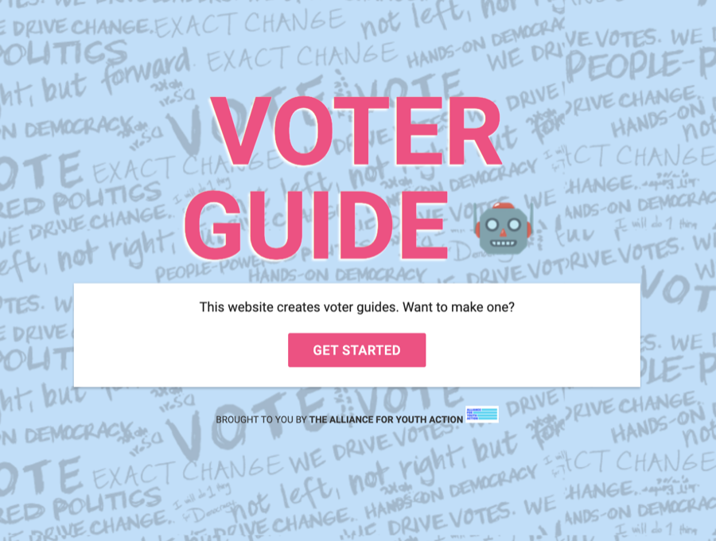
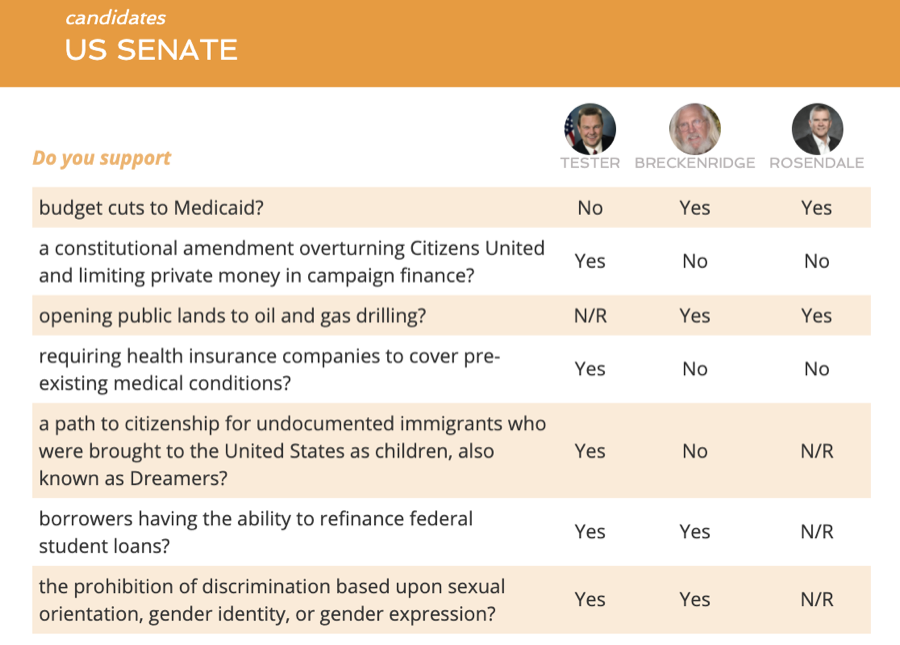
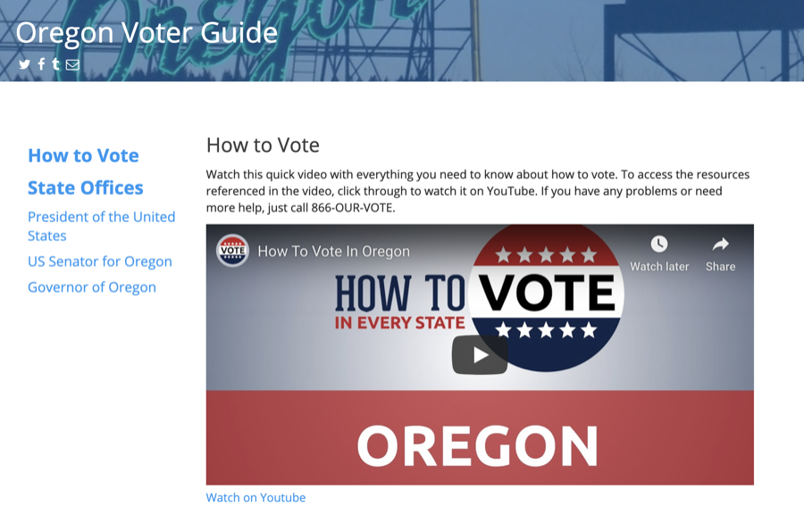
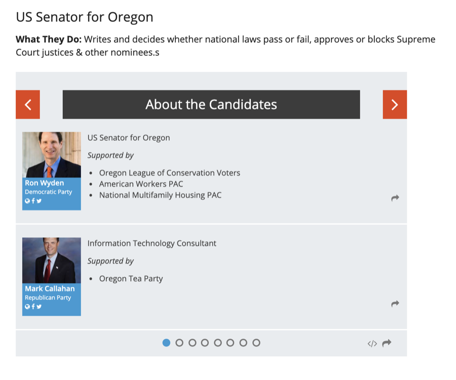
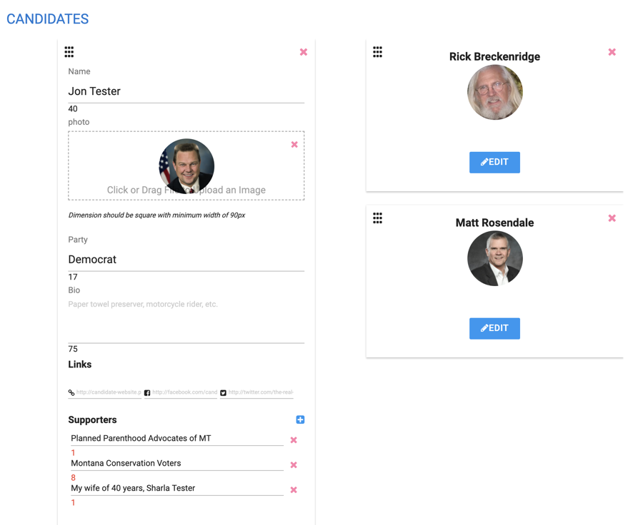
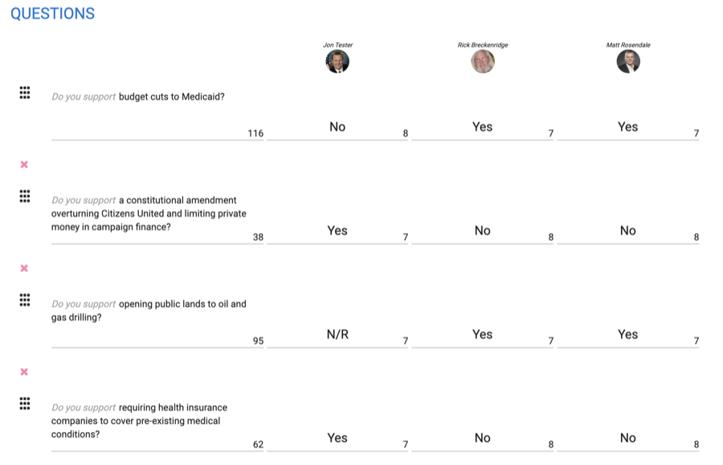

Specimen Nº 04 · Habitat I — Democracy & elections
American Voter Guide
A Rails engine for building PDF + web voter guides across the Alliance for Youth Action's affiliates.
- First observed
- 2016
- Design
- Ashleigh Axios, Jen Wick
Keeping Voters Informed Online & IRL
Building off the Municipal Voter Guides - the Alliance for Youth Action wanted to create an engine for producing voter guides that would serve all the needs of affiliate organizations that produce and distribute voter guides to young voters across the country and also create shareable content for the web.
Enter the voter guide builder: a ruby on rails application, deployed on Heroku, which allowed organizer to create and generate PDFs and web voter guides. An easy to use Reactjs frontend made it simple to build and customize voter guides that would then be build into their final form by a worker queue and published: PDFs generated using PhantomJS and static sites built and published in S3 and AWS Cloudfront.
Plates · from the field






Field notes